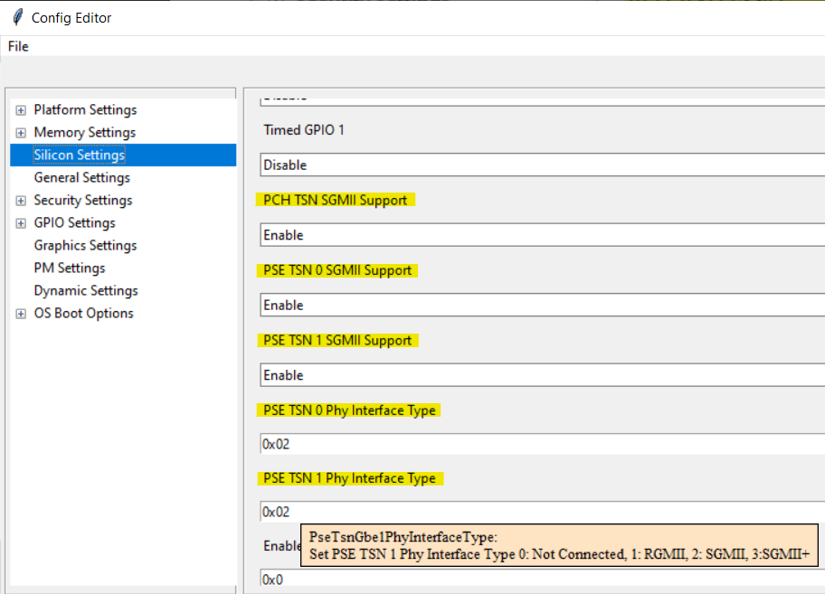

Enable TSN GbE SGMII
There are three Gigabit Ethernet (GbE) Controllers that reside in Elkhart Lake PCH including Intel® PSE. One is owned by PCH host, and the other two are owned by Intel® PSE. The GbE controller can operate at multiple speeds, 10/100/1000 Mbps (RGMII & SGMII) & 2.5Gbps (SGMII+) and in either full duplex or half duplex mode. GbE Host supports SGMII only. GbE PSE0 and GbE PSE1 support RGMII, SGMII and SGMII+.
TSN GbE configuration settings
SBL provides several configuration items for TSN GbE settings. Take Elkhart Lake as an example.
- PchTsnGbeSgmiiEnable : name : PCH TSN SGMII Support type : Combo option : $EN_DIS help : > Enable/disable PCH TSN SGMII support 0=Disable 1=Enable length : 1b value : 0x1 - PseTsnGbe0SgmiiEnable : name : PSE TSN 0 SGMII Support type : Combo option : $EN_DIS help : > Enable/disable PSE TSN 0 SGMII support 0=Disable 1=Enable length : 1b value : 0x00 - PseTsnGbe1SgmiiEnable : name : PSE TSN 1 SGMII Support type : Combo option : $EN_DIS help : > Enable/disable PSE TSN 1 SGMII support 0=Disable 1=Enable length : 1b value : 0x00 - PseTsnGbe0PhyInterfaceType : name : PSE TSN 0 Phy Interface Type type : EditNum, HEX, (0x00,0x3) help : > Set PSE TSN 0 Phy Interface Type 0: Not Connected, 1: RGMII, 2: SGMII, 3:SGMII+ length : 2b value : 0x01 - PseTsnGbe1PhyInterfaceType : name : PSE TSN 1 Phy Interface Type type : EditNum, HEX, (0x00,0x3) help : > Set PSE TSN 1 Phy Interface Type 0: Not Connected, 1: RGMII, 2: SGMII, 3:SGMII+ length : 2b value : 0x01
User can directly change the default values in CfgData_Silicon.yaml, but the default values will be overridden if the same fields exist in a board specific delta file. For further information on delta file, refer to DLT File. The following two sections illustrate the steps to update TSN GBE configuration settings in the board specific delta file with and without using SBL ConfigEditor GUI tool.
Update configuration data with ConfigEditor GUI
1. Run the ConfigEditor.py tool from SBL source code
BootloaderCorePkg\Tools\ConfigEditor.py
2. Open SBL default configuration data
Open default configuration file CfgDataDef.yaml from platform configuration data folder. Take Elkhart Lake as an example, open the file Platform\ElkhartlakeBoardPkg\CfgData\CfgDataDef.yaml in this step.
3. Load the delta file
Same SBL image can boot multiple boards based on board ID. Each board delta file would override the default SBL configuration data. So need to load the board delta file if it already exists. The board delta file would be in the same folder with CfgDataDef.yaml. Open CfgData_Ext_IotgCrb.dlt as an example.
4. Change options to enable TSN GbE SGMII
Find TSN GbE settings from ConfigEditor and update the options if required.
5. Save the changes to the delta file
Save the changes back to the same delta file (CfgData_Ext_IotgCrb.dlt in this example) to override the original one.
Update configuration data directly on delta file
User can manually update configuration data by having something like the following added to the board specific delta file (CfgData_Ext_IotgCrb.dlt in this example).
SILICON_CFG_DATA.PchTsnGbeSgmiiEnable | 0x01
SILICON_CFG_DATA.PseTsnGbe0SgmiiEnable | 0x01
SILICON_CFG_DATA.PseTsnGbe1SgmiiEnable | 0x01
SILICON_CFG_DATA.PseTsnGbe0PhyInterfaceType | 0x02
SILICON_CFG_DATA.PseTsnGbe1PhyInterfaceType | 0x02
With the above configuration data change, rebuild SBL. Then the TSN GbE configuration settings would be enabled and effective in new SBL IFWI image.